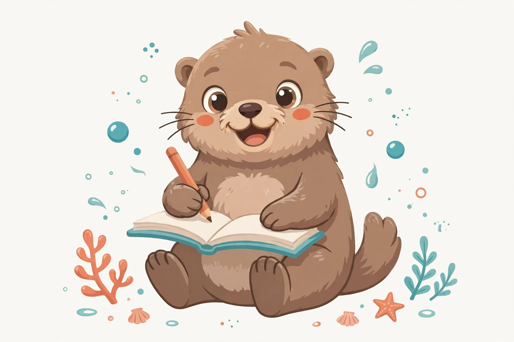
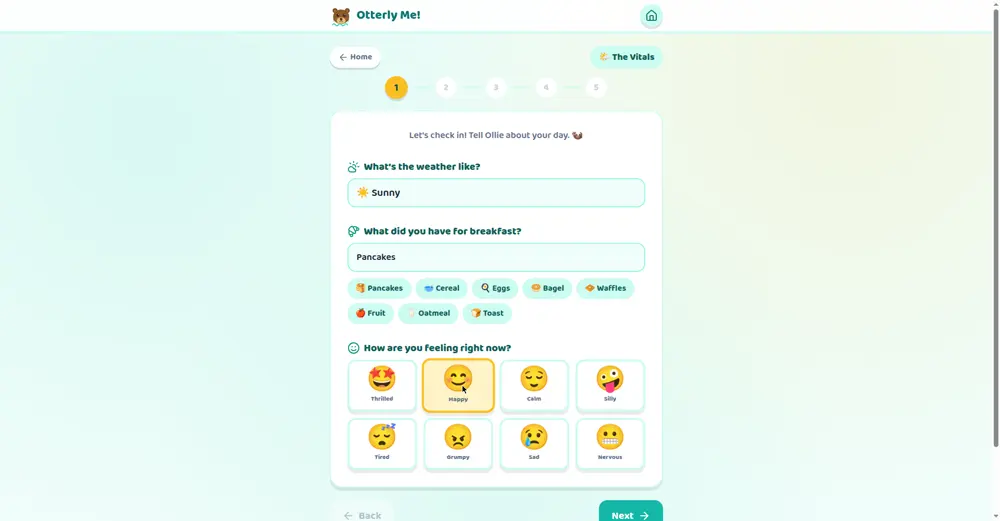
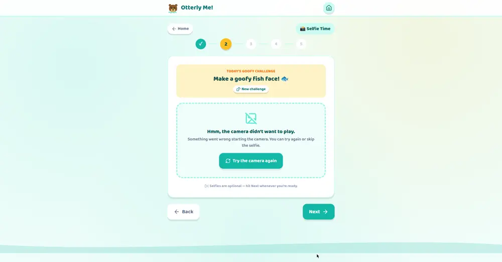
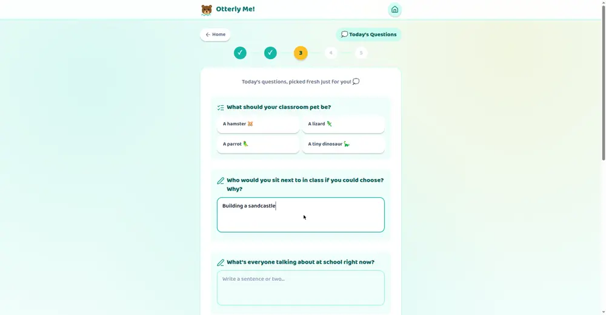
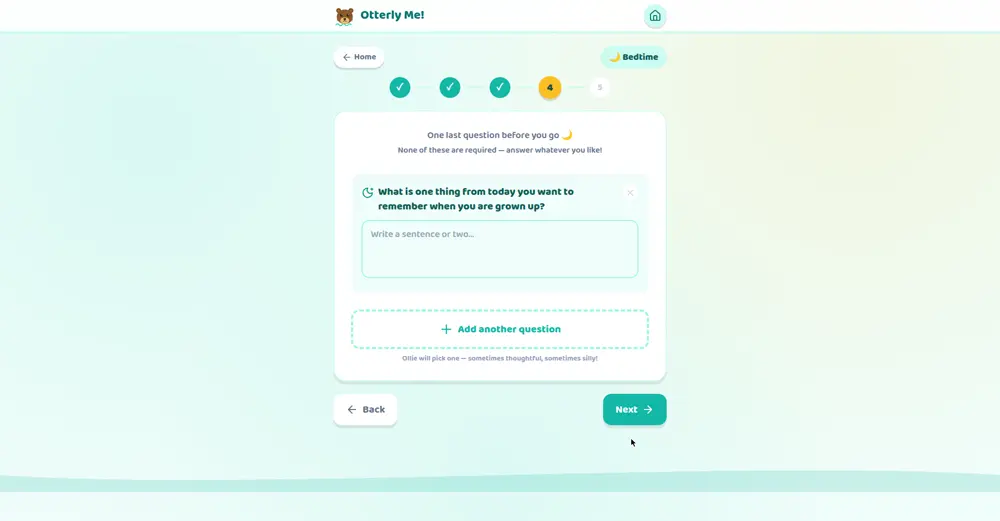
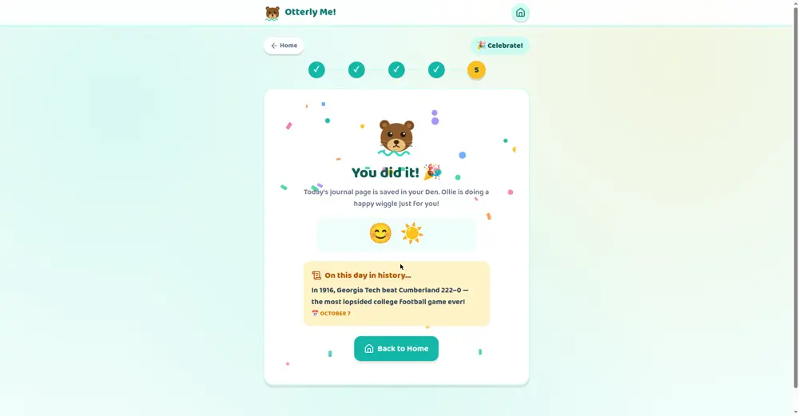

Otterly Me! turns the after-school wind-down into a playful daily ritual. Kids reflect on their day, practice typing real sentences, and learn their way around a web app — with Ollie the otter cheering them on.
No app store. No sign-up. Opens right in the browser.

Every day, without feeling like homework.
Gratitude, feelings, favorite moments, proud moments. Gentle prompts build emotional vocabulary and a habit of looking back with kindness.
Open-ended questions mean real sentences on a real keyboard, every single day. Typing fluency grows one journal entry at a time.
Buttons, forms, the camera, saving work, navigating pages — digital literacy in a safe sandbox with nothing to break and no strangers.
A guided flow that takes about five minutes, start to finish.

Weather, breakfast, and how they're feeling — a soft landing after school.

A goofy prompt ("make a fish face!") and an optional photo for the day's page.

Fresh questions every day from a bank of 200+ — thoughtful, silly, and favorites to compare over time.

An optional evening page with one last question: what do you want to remember when you're grown up?

Confetti, a streak flame, and a kid-friendly "on this day in history" fact. Then it's saved to The Den — their archive of every page.
Everything your child writes, draws, and photographs stays on your family's device. There is nowhere for it to go — because it never leaves.
This journal belongs to
Emma
If the tablet is lost, the journal goes with it — just like a paper diary. That's the trade, and it's on purpose.
Tap any screenshot to see it bigger.
Yes — it's free while in beta. We're sharing it with friends and family first to learn what kids love before we decide what's next.
It's designed for kids roughly 6–12. Younger kids can tap through the multiple-choice and mood pickers; older kids get the most out of the open-ended writing prompts.
Any modern phone or tablet with a web browser. For the full app feel, add it to the home screen: on iPad, open it in Safari → Share → Add to Home Screen; on Android, open it in Chrome → ⋮ → Install app.
They stay in the browser on your device — that's it. There are no accounts, no servers, and nothing is ever uploaded or shared. If you'd like, we can walk through exactly what that means before your kid starts.
Yes! Each child gets their own journal. They write their name on the "This journal belongs to…" page (in a handwritten font, like a real diary), and switching between journals takes one tap.
No. No ads, no purchases, no pop-ups asking for anything. It's a calm little corner of the internet.
Free while in beta. Takes 30 seconds to open — no sign-up, no download from an app store.
Get Otterly Me! free 🦦